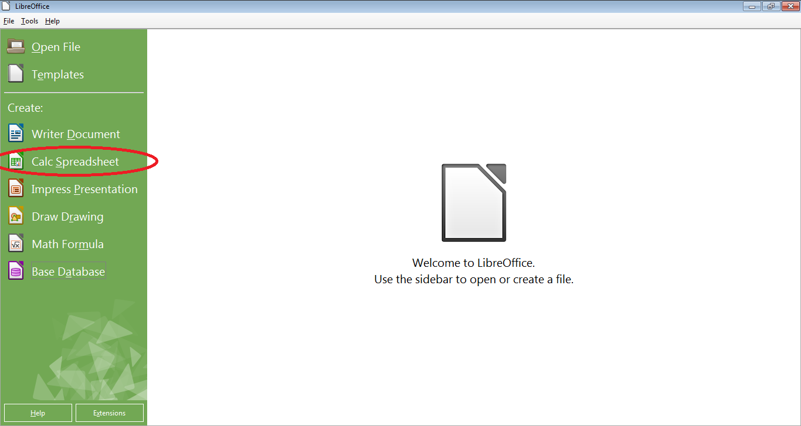
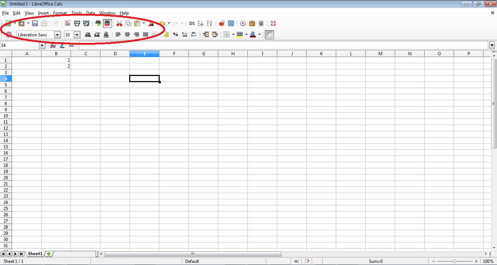
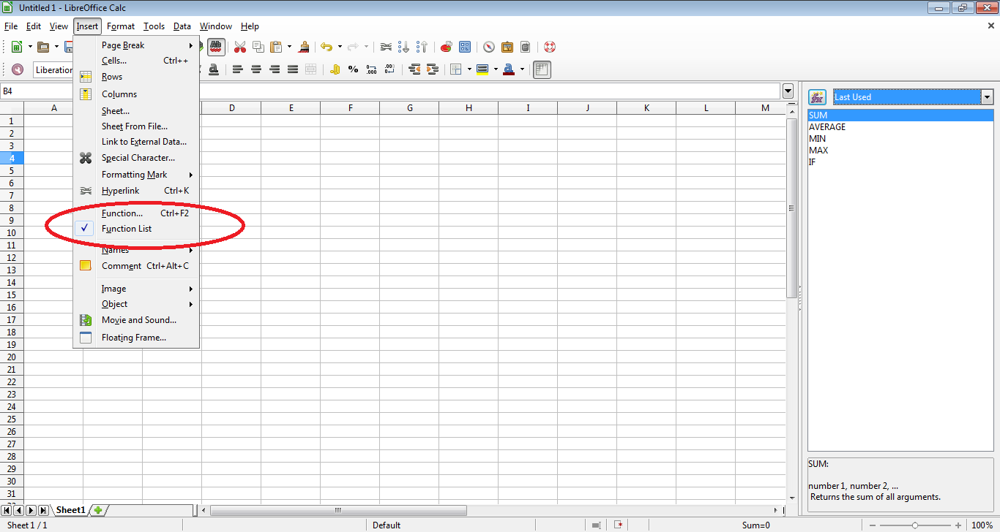
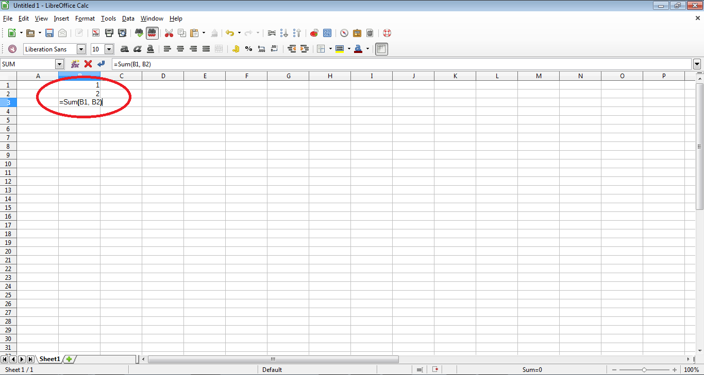

Spreadsheets are very useful for storing data or making calculations. You can make and edit them with LibreOffice Calc
Pre-requisites
LibreOffice
Data that would be best viewed or calculated in/with a spreadsheet
Steps
Open LibreOffice.
Open the Calc program, as shown in Figure 1.
If you want to edit an existing spreadsheet, select the "Open File" button instead.
Type the values into the spreadsheet, using the format options shown in figure 2 to alter the spreadsheet as needed.
To use equations, go to "format", then "function" as shown in figure 3. An example function is shown in figure 4.
Periodically save your spreadsheet by pressing ctrl + "s" at the same time.
When finished, either exit LibreOffice by clicking the X at the upper right of the screen.
Figures

Figure 1: The LibreOffice main page, with the Calc button circled

Figure 2: A sample spreadsheet with a few numbers and the format options circled

Figure 3: The sample spreadsheet with the function and function list options circled

Figure 4: A sample spreadsheet with a basic function to add the values of two cells circled.